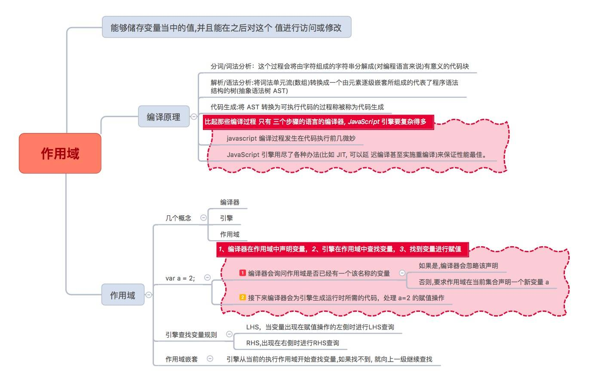
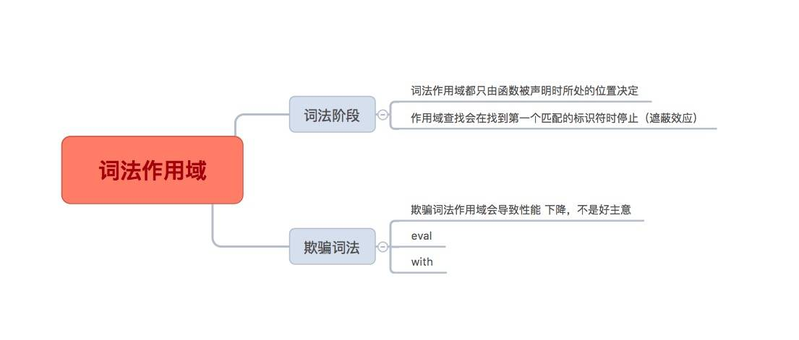
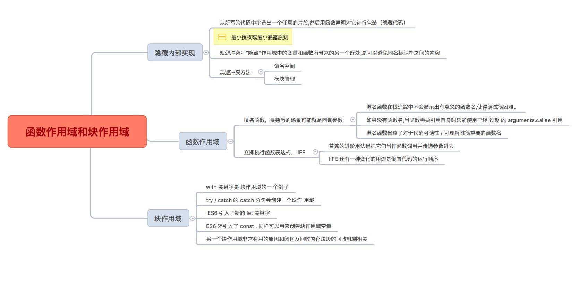
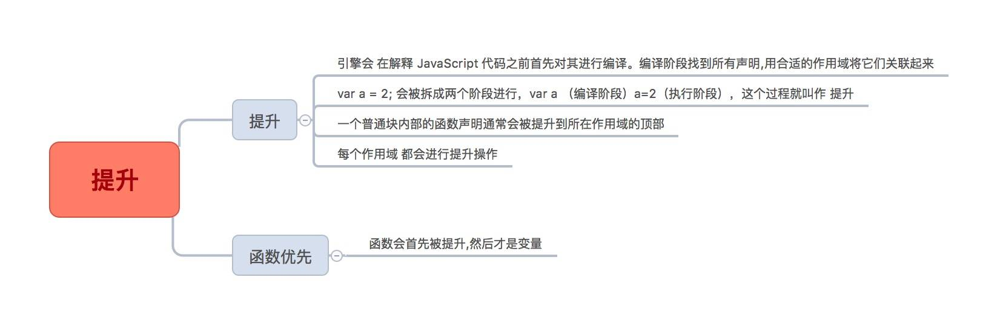
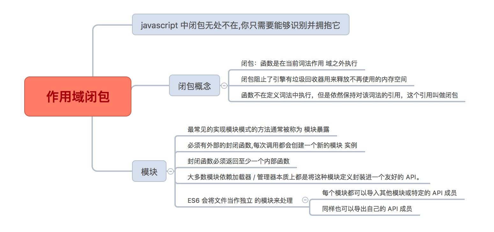

作用域是什么
看一下思维导图

作用域是一套规则,用于确定在何处以及如何查找变量(标识符)。如果查找的目的是对 变量进行赋值,那么就会使用 LHS 查询;如果目的是获取变量的值,就会使用 RHS 查询。赋值操作符会导致 LHS 查询。 的赋值操作。 =操作符或调用函数时传入参数的操作都会导致关联作用域的赋值操作。
JavaScript 引擎首先会在代码执行前对其进行编译,在这个过程中,像 var a = 2 这样的声 明会被分解成两个独立的步骤：
一: 首先, var a 在其作用域中声明新变量。这会在最开始的阶段,也就是代码执行前进行。
二: 接下来, a = 2 会查询(LHS 查询)变量 a 并对其进行赋值。
LHS 和 RHS 查询都会在当前执行作用域中开始,如果有需要(也就是说它们没有找到所 需的标识符),就会向上级作用域继续查找目标标识符,这样每次上升一级作用域(一层 楼),最后抵达全局作用域(顶层),无论找到或没找到都将停止。
不成功的RHS引用会导致抛出 ReferenceError 异常。不成功的 LHS 引用会导致自动隐式地创建一个全局变量(非严格模式下),该变量使用 LHS 引用的目标作为标识符,或者抛 出 ReferenceError 异常(严格模式下)。
词法作用域

词法作用域意味着作用域是由书写代码时函数声明的位置来决定的。编译的词法分析阶段 基本能够知道全部标识符在哪里以及是如何声明的,从而能够预测在执行过程中如何对它 们进行查找。
JavaScript 中有两个机制可以“欺骗”词法作用域: eval(..) 和 with 。 前者可以对一段包 含一个或多个声明的“代码”字符串进行演算,并借此来修改已经存在的词法作用域(在 运行时)。后者本质上是通过将一个对象的引用 当作 作用域来处理,将对象的属性当作作 用域中的标识符来处理,从而创建了一个新的词法作用域(同样是在运行时)。
这两个机制的副作用是引擎无法在编译时对作用域查找进行优化,因为引擎只能谨慎地认 为这样的优化是无效的。使用这其中任何一个机制都 将 导致代码运行变慢。 不要使用它们。
函数作用域和块作用域

函数是 JavaScript 中最常见的作用域单元。本质上,声明在一个函数内部的变量或函数会 在所处的作用域中“隐藏”起来,这是有意为之的良好软件的设计原则。
但函数不是唯一的作用域单元。块作用域指的是变量和函数不仅可以属于所处的作用域, 也可以属于某个代码块(通常指 { .. } 内部)。
从 ES3 开始, try/catch 结构在 catch 分句中具有块作用域。在 ES6 中引入了 let 关键字( var 关键字的表亲), 用来在任意代码块中声明变量。 if(..) { let a = 2; } 会声明一个劫持了 if 的 { .. } 块的变量,并且将变量添加到这个块 中。
有些人认为块作用域不应该完全作为函数作用域的替代方案。两种功能应该同时存在,开 发者可以并且也应该根据需要选择使用何种作用域,创造可读、可维护的优良代码。
提升

我们习惯将 var a = 2; 看作一个声明,而实际上 JavaScript 引擎并不这么认为。它将 var a 和 a = 2 当作两个单独的声明,第一个是编译阶段的任务,而第二个则是执行阶段的任务。
这意味着无论作用域中的声明出现在什么地方,都将在代码本身被执行前 首先 进行处理。 可以将这个过程形象地想象成所有的声明(变量和函数)都会被“移动”到各自作用域的最顶端,这个过程被称为提升。
声明本身会被提升,而包括函数表达式的赋值在内的赋值操作并不会提升。
要注意避免重复声明,特别是当普通的 var 声明和函数声明混合在一起的时候,否则会引 起很多危险的问题!
作用域闭包

闭包就好像从 JavaScript 中分离出来的一个充满神秘色彩的未开化世界,只有最勇敢的人 才能够到达那里。但实际上它只是一个标准,显然就是关于如何在函数作为值按需传递的 词法环境中书写代码的。
当函数可以记住并访问所在的词法作用域,即使函数是在当前词法作用域之外执行,这时 就产生了闭包。
如果没能认出闭包,也不了解它的工作原理,在使用它的过程中就很容易犯错,比如在循 环中。但同时闭包也是一个非常强大的工具,可以用多种形式来实现 模块 等模式。模块有两个主要特征:
(1)为创建内部作用域而调用了一个包装函数;
(2)包装函数的返回 值必须至少包括一个对内部函数的引用,这样就会创建涵盖整个包装函数内部作用域的闭 包。
现在我们会发现代码中到处都有闭包存在,并且我们能够识别闭包然后用它来做一些有用 的事!